Single Phase Power
Resistance
Inductance
Capacitance
Active Power and Reactive Power
Active Power
Resistive Power
Reactive Power
Inductive Power
Capacitive Power
Active Component and Reactive Component
Three Phase Power Definition
Advantages of Three Phase System
Three Phase Power Equation
Use of Reactive Power
• In Transmission Lines
• Compensation
Complex Power
It is very conceptual and essential to understand. For establishing the expression of complex power, we have to first consider a single phase network that's voltage and current can be represented in complex form as V.ejα and I.ejβ. Where α and β are angles that voltage vector and electric current vector subtend with respect to some reference axis respectively. The active power and reactive power can be calculated by finding the product of voltage to conjugate of electric current.
That means,
This (α − β) is nothing but the angle between voltage and current, hence that is phase difference between voltage and current which is normally denoted as φ.
Therefore the above equation cab be re-written as,
Where P = VIcosφ and Q = VIsinφ.
This quantity S is called the complex power.
The magnitude of complex power i.e. |S| = (P2 + Q2)½ is known as the apparent power and its unit is volt-ampere. This quantity is a product of absolute value of voltage and current. Again absolute value of electric current is directly related to heating effect as per Joule's law of heating. Hence, rating of an electrical machine is normally determined by its apparent power carrying capability within allowable temperature limit.
It is noted that in the equation of complex power, the term Q [ = VIsinφ ] is positive when φ [= (α − β)] is positive that is, electric current lags the voltage which means the load is inductive in nature. Again Q is negative when φ is negative; that is current leads the voltage that means the load is capacitive.
Single Phase Power
A single phase electrical transmission system is practically not available, but still we should know the basic concept of single phase power first before going through modern three phase power system. Before going to details about single phase power, let's try to understand different parameters of electrical power system. Three basic parameters of electrical power system are electrical resistance, inductance and capacitance.
Resistance
The resistance is an inherent property of any material, due to which it resists the flow of electric current by obstructing the movement of electrons through it due to collision with stationary atoms. The heat generated due to this process is dissipated and known as ohmic power loss. While electric current flows through a resistor ">resistor, there will not be any phase difference between the voltage and current, which means electric current and voltage are in same phase; the phase angle between them is zero. If I current flows through an electrical resistance R for t seconds, then total energy consumed by the resistor is I2.R.t. This energy is known as active energy and corresponding power is known as active power.
Inductance
Inductance is the property by virtue of which an inductor stores energy in magnetic field during positive half cycle and gives away this energy during negative half cycle of single phase power supply. If a current 'I' flows through a coil of inductance L Henry, the energy stored in the coil in form of magnetic field is given by
The power associated with an inductance is reactive power.
Capacitance
Capacitance is the property by virtue of which a capacitor stores energy in static electric field during positive half cycle and give away during negative half cycle of supply. The energy stored between two parallel metallic plates of electric potential difference V and capacitance across them C, is expressed as
This energy is stored in form of static electric field. The power associated with a capacitor is also reactive power.
Active Power and Reactive Power
Let us consider a single phase power circuit in which current lags behind the voltage by an angle φ.
Let the instantaneous electric potential difference v = Vm.sinωt
Then the instantaneous current can be expressed as i = Im. sin(ωt - φ).
Where, Vm and Im are the maximum values of sinusoidally varying electric potential difference and current respectively.
The instantaneous power of the circuit is given by
Active Power
Resistive Power
Let's take the condition first where the single phase power circuit is fully resistive in nature, that means the phase angle between voltage and current i.e. φ = 0 and hence,
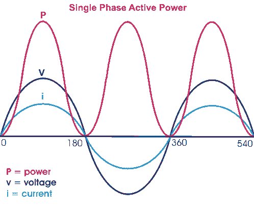
From the above equation it is clear that, whatever may be the value of ωt the value of cos2ωt cannot be greater than 1; hence the value of p cannot be negative. The value of p is always positive irrespective of the instantaneous direction of voltage v and electric current i, that means the energy is flowing in its conventional direction, i.e. from source to load and p is the rate of energy consumption by the load and this is called active power. As this power is consumed due to resistive effect of an electrical circuit, hence sometimes it is also called resistive power.
Reactive Power
Inductive Power
Now consider a situation when the single phase power circuit is fully inductive, that means the current lags behind the voltage by an angle φ = + 90°. Putting φ = + 90°
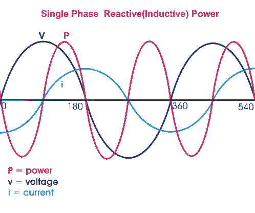
In the above expression, it is found that the power is flowing in alternative directions. From 0° to 90° it will have negative half cycle, from 90° to 180° it will have positive half cycle, from 180° to 270° it will have again negative half cycle and from 270° to 360° it will have again positive half cycle. Therefore this power is alternative in nature with a frequency, double of supply frequency. As the power is flowing in alternating direction i.e. from source to load in one half cycle and from load to source in next half cycle, the average value of this power is zero. Therefore this power does not do any useful work. This power is known as reactive power. As the above explained reactive power expression is related to fully inductive circuit, this power is also called inductive power.
This can be concluded as if the circuit is purely inductive, energy will be stored as magnetic field energy during positive half cycle and give away during negative half cycle and rate at which this energy changes, expressed as reactive power of inductor or simply inductive power and this power will have equal positive and negative cycle and the net value will be zero.
Capacitive Power
Let us now consider the single phase power circuit is fully capacitive, that is the current leads the voltage by 90°, therefore φ = - 90°.
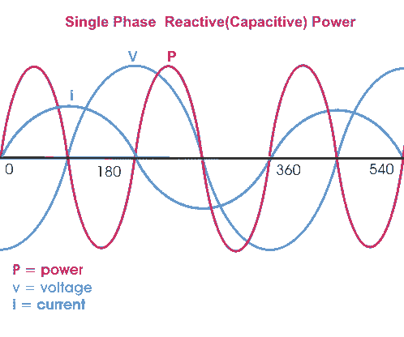
Hence in the expression of capacitive power, it is also found that the power is flowing in alternative directions. From 0° to 90° it will have positive half cycle, from 90° to 180° it will have negative half cycle, from 180° to 270° it will have again positive half cycle and from 270° to 360° it will have again negative half cycle. So this power is also alternative in nature with a frequency, double of supply frequency. Therefore, as inductive power, the capacitive power does not do any useful work. This power is also a reactive power.
Active Component and Reactive Component of Power
The power equation can be re-written as
This above expression has two consonants; first one is Vm. Im.cosφ(1 – cos2ωt) which never goes negative as because value of (1 – cos2ωt) always greater or equal zero but cannot have a negative value.
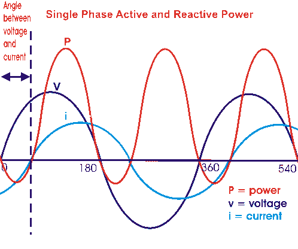
This portion of the single phase power equation represents the expression of reactive power which is alternatively known as real power or true power. The average of this power will obviously have some non zero value means, the power physically does some useful work and that is why this power is also called real power or sometimes it is referred as true power. This portion of the power equation represents the reactive power which is alternatively known as real power or true power.
Second term is Vm. Im.sinφsin2ωt which will have negative and positive cycles. Hence, average of this component is zero. This component is known as reactive component as it travels back and forth on the line without doing any useful work.
Both active power and reactive power have same dimensions of watts but to emphasize the fact that reactive component represents a non-active power, it is measured in terms of volt-amperes reactive or in short VAR.
Single phase power refers to the distribution system in which; all the voltages vary in unison. It can be generated simply by rotating a moving coil in a magnetic field or by moving field around a stationary coil. The alternating voltage and alternating electric current so produced, thus referred to as single phase voltage and current. Different types of circuits show different response to the application of sinusoidal input. We will consider all type of circuits one by one that include electrical resistance only, capacitance only and inductor only, and a combination of these three and try to establish single phase power equation.
Single Phase Power Equation for Purely Resistive Circuit
Let's examine single phase power calculation for purely resistive circuit. Circuit consisting of pure ohmic resistance is across a voltage source of voltage V, is shown below in figure(a).
Where, V(t) = instantaneous voltage.
Vm = maximum value of voltage.
ω = angular velocity in radians/seconds.
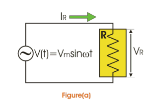
According to Ohm’s law ,

Substituting value of V(t) in above equation we get,
From equations (1.1) and (1.5) it is clear that V(t) and IR are in phase. Thus in case of pure ohmic resistance, there is no phase difference between voltages and current, i.e. they are in phase as shown in figure (b).
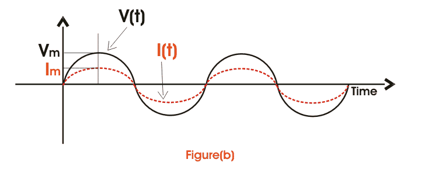
Instantaneous power,
From single phase power equation (1.8) it is clear that power consist of two terms, one constant part i.e.
and another a fluctuating part i.e.
That's value is zero for the full cycle. Thus power through pure ohmic resistor is given as and is shown in fig(c).
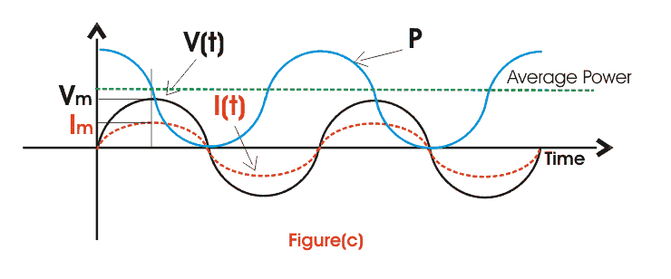
Single Phase Power Equation for Purely Inductive Circuit
Inductor is a passive component. Whenever AC passes through inductor, it opposes the flow of electric current through it by generating back emf. So, applied voltage rather than causing drop across it needs to balance the back emf produced. Circuit consisting of pure inductor across sinusoidal voltage source Vrms is shown in fig (d).
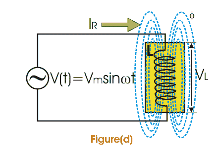
We know that voltage across inductor is given as,
Thus from above single phase power equation it is clear that I lags V by π/2 or in other words V leads I by π/2 , when AC pass through inductor i.e. I and V are out of phase as shown in fig (e).
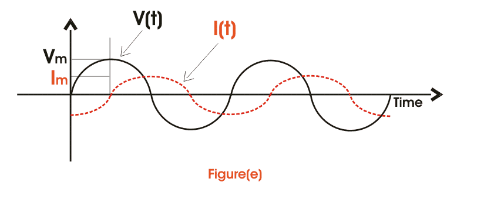
Instantaneous power is given by,
Here, single phase power formula consists of only fluctuating term and the value of power for full cycle is zero.
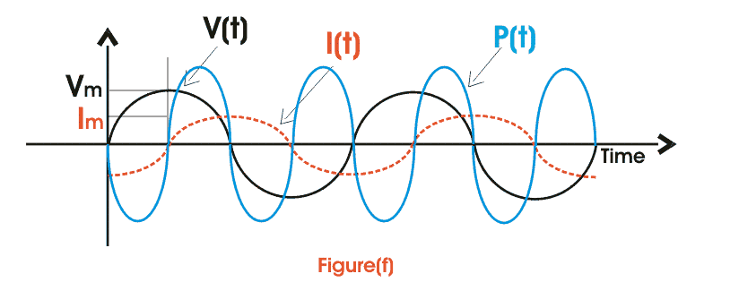
Single Phase Power Equation for Purely Capacitive Circuit
When AC passes through capacitor, it charges first to its maximum value and then it discharges. The voltage across capacitor is given as,
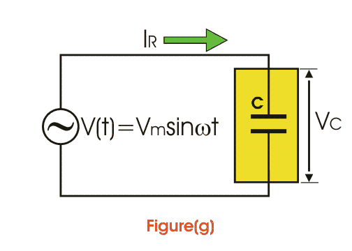
Thus it is clear from above single phase power calculation of I(t) and V(t) that in case of capacitor current leads voltage by angle of π/2.
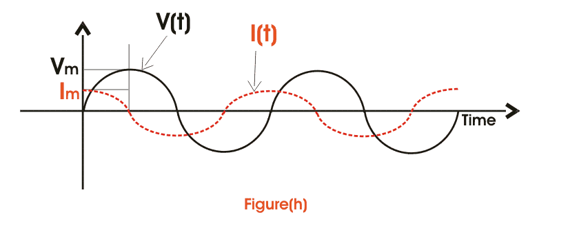voltage and current" class="aligncenter size-full wp-image-5700" />
Power through capacitor consists of only fluctuating term and the value of power for full cycle is zero.
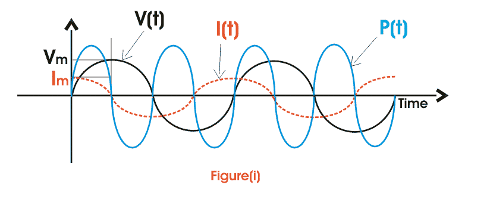
Single Phase Power Equation for RL Circuit
A pure ohmic resistor and inductor are connected in series below as shown in fig (g) across a voltage source V. Then drop across R will be VR = IR and across L will be VL = IXL.
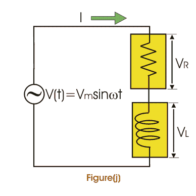
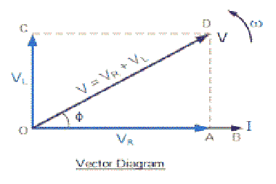
These voltage drops are shown in form of a voltage triangle as shown in fig (i). Vector OA represents drop across R= IR, vector AD represents drop across L=IXL and vector OD represents the resultant of VR and VL.
is the impedance of RL circuit.
From vector diagram it is clear that V leads I and phase angle φ is given by,
Thus power consist of two terms, one constant term 0.5 VmImcosφ and other a fluctuating term 0.5 VmImcos(ωt - φ) that's value is zero for the whole cycle.
Thus its the only constant part that contributes to actual power consumption.
Thus power, p = VI cos Φ = ( rms voltage × rms electric current × cosφ) watts
Where cosφ is called power factor and given by,
I can be resolved in two rectangular components Icosφ along V and Isinφ perpendicular to V. Only Icosφ contributes to real power. Thus, only VIcosφ is called wattfull component or active component and VIsinφ is called wattless component or reactive component.
Single Phase Power Equation for RC Circuit
We know that electric current in pure capacitance, leads voltage and in pure ohmic resistance it is in phase. Thus, net electric current leads voltage by angle of φ in RC circuit. If V = Vmsinωt and I will be Imsin(ωt + φ).
Power is same as in the case of R-L circuit. Unlike R-L circuit electrical power factor is leading in R-C circuit.
Three Phase Power Definition
It is found that generation of three phase power is more economical than generation of single phase power. In three phase electric power system, the three voltage and current waveform are 120° offset in time in each cycle of power. That means; each voltage waveform has phase difference of 120° to other voltage waveform and each electric current waveform has phase difference of 120° to other electric current waveform. Three phase power definition states that in an electrical system, three individual single phase powers are carried out by three separate power circuits. The voltages of these three powers are ideally 120° apart from each other in time-phase. Similarly, the currents of these three powers are also ideally 120° apart from each other. Ideal three phase power system implies balanced system.
A three phase system is said to be unbalanced when either at least one of the three phase voltage is not equal to other or the phase angle between these phases is not exactly equal to 120°.
Advantages of Three Phase System
There are many reasons due to which this power is more preferable than single phase power.
- The single phase power equation is
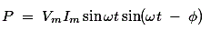
Which is time dependent function. Whereas three phase power equation is
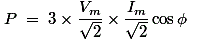 Which is time independent constant function. Hence the single phase power is pulsating. This generally does not effect the low rating motor but in larger rated motor, it produces excessive vibration. So three phase power is more preferable for high tension power load.
- The rating of a three phase machine 1.5 times greater than that of same size single phase machine.
- Single phase induction motor has no starting torque, so we have to provide some auxiliary means of starting, but three phase induction motor is self starting-does not require any auxiliary means.
- Power factor and efficiency, both are greater in case of three phase system.
Three Phase Power Equation
For determination, the expression of three phase power equation i.e. for three phase power calculation we have to first consider an ideal situation where the three phase system is balanced. That means voltage and currents in each phase differ from their adjacent phase by 120° as well as the amplitude of each electric current wave is same and similarly amplitude of each voltage wave is same. Now, the angular difference between voltage and current in each phase of three phase power system is φ.
Then the voltage and current of red phase will be
VR = Vmsinωt and IR = Imsin(ωt − φ) respectively.
The voltage and current of yellow phase will be-
VY = Vmsin(ωt − 120°) and IY = Imsin(ωt − φ − 120°) respectively.
And the voltage and current of blue phase will be-
VB = Vmsin(ωt + 120°) and IB = Imsin(ωt − φ + 120°) respectively.
VR. IR = Vm. Imsinωt.sin(ωt − φ)
Similarly the expression instantaneous power in yellow phase is -
VY. IY = Vm.Imsin(ωt. − 120°)sin(ωt − φ − 120°)
Similarly the expression instantaneous power in blue phase is -
VB.IB = Vm.Imsin(ωt + 120°)sin(ωt − φ + 120°)
The total three phase power of the system is summation of the individual power in each phase-
P = VR.IR + VY. IY + VB. IB
= Vm.Imsinωt.sin(ωt − φ) + Vm.Imsin(ωt − 120°)sin(ωt − φ − 120°) + Vm.Imsin(ωt + 120°)sin(ωt − φ + 120°)
= Vm.Im[sinωt.sin(ωt − φ) + sin(ωt − °)sin(ωt − φ − 120°) + sin(ωt + 120°)sin(ωt − φ + 120°)]
= Vm.Im.(1/2)[2.sinωt.sin(ωt − φ) + 2.sin(ωt − 120°)sin(ωt − φ − 120°) + 2.sin(ωt + 120°)sin(ωt − φ + 120°)]
= Vm.Im.(1/2)[cos(ωt − ωt + φ) − cos(ωt + ωt − φ) + cos(ωt. − 120° − ωt. + 120° + φ) − cos(ωt − 120° + ωt − 120° − φ)
+ cos(ωt + 120° − ωt − 120°t + φ) − cos(ωt + 120° + ωt + 120° − φ)]
= Vm.Im.(1/2)[cosφ − cos(2.ωt − φ) + cosφ − cos(2.ωt − 240° − φ) + cosφ − cos(2.ωt + 240° − φ)]
= Vm.Im.(1/2)[3.cosφ − cos(2.ωt − φ) − cos(2.ωt − 240° − φ) − cos(2.ωt + 240° − φ)]
= Vm.Im.(1/2)[3.cosφ − cos(2.ωt − φ) − 2.cos(2.ωt − φ).cos(240°)]
= Vm.Im.(1/2)[3.cosφ − cos(2.ωt − φ) − 2.cos(2.ωt − φ).{−1/2}]
= Vm.Im.(1/2)[3.cosφ − cos(2.ωt − φ) + cos(2.ωt − φ)]
= 3.(Vm/√2).(Im/√2).cosφ
= 3VIcosφ This is three phase power equation
The above expression of power shows that the total instantaneous power is constant and equal to three times of the real power per phase. In case of single phase power expression we found that there are both reactive power and active power components, but in case of three phase power expression, the instantaneous power is constant. Actually in three phase system, the reactive power in each individual phase is not zero but sum of them at any instant is zero.
Reactive power is the form of magnetic energy, flowing per unit time in an electric circuit. Its unit is VAR (Volt Ampere Reactive). This power can never be used in an AC circuit. However, in an electrical DC circuit it can be converted into heat as when a charged capacitor or inductor is connected across a resistor, the energy stored in the element get converted to heat. Our power system operates on AC system and most of the loads used in our daily life, are inductive or capacitive, therefore reactive power is a very important concept from electrical perspective.
The electrical power factor of any equipment determines the amount of reactive power it requires. It is the ratio of real or true power to the total apparent power required by an electrical appliance. These powers can be defined as,
Where θ is the phase difference between voltage and electric current and cosθ is electrical power factor of the load.

Reactive power is always present in a circuit where there is a phase difference between voltage and electric current in that circuit, such as all our domestic loads are inductive. So, there is a phase difference between voltage and current, and the current lags behind the voltage by certain angle in time domain. An inductive component takes the lagging reactive power and a capacitive component absorbs the leading reactive power, here lagging reactive power refers to magnetic energy and leading reactive power refers to electrostatic energy.
In a typical AC circuit, such as RL circuit (Resistive + Inductive) or RC circuit (Resistive + Capacitive), the reactive power is taken from the supply for a half cycle and returned to the supply for next half cycle. For example power consumed for an RL load is derived as:
Then power is given by,
Here Q1sin2ωt is reactive power that's average value is zero, this shows that reactive power is never utilized.
Use of Reactive Power
In an electrical machine, the energy conversion needs a magnetic domain to convert its form. In an electrical motor, the required magnetic domain is produced by reactive power which it takes from the supply.Today almost every electrical load needs reactive power to run in spite of real power. Even in an electrical transformer which is the basic unit of power system, primary input current is lagging as it takes lagging VAR to magnetize its core and transfer the power through mutual induction.
Reactive Power in Transmission Lines
In an electrical power transmission line, the flow of reactive power in the line decides the receiving end voltage. Managing voltage level at the receiving end is very important, as higher voltage can damage the consumer's equipment and there will be a great loss. In many cases, we see sudden voltage rise or fall due to lightning or due to any fault on the healthy phases and in any case damage to the equipment occurs. Let us see how voltage depends on reactive power.
The receiving end reactive power is given by,

Where θ is the power angle which is kept very low due to stability reasons, Xl is the reactance of the transmission line, Vs is the sending end voltage and Vr is the receiving end voltage.
So Qr becomes,
Now equation is formed as,
Solving we get,
Let Q1 be the reactive power demanded by the load at the receiving end and Q2 be the reactive power supply from the generating or sending end. Then Qr is (Q1 - Q2).
Case - 1
When supply Q2 is equal to demand Q1 then Vs = Vr, the receiving end voltage will be equal to sending end voltage, which is desirable.
Case - 2
When demand is more and supply is less, Qr becomes negative. And so the receiving end voltage becomes less than sending end voltage.
Case - 3
When demand is less, supply is high, Qr becomes positive. Thus, the receiving end voltage becomes greater than sending end voltage which is very dangerous.
In this way, we saw how voltage (and its level management) which is very basic requirement of any electrical load; depends on reactive power. During the daytime, the demand for reactive power increases, therefore voltage dip occurs. On the other hand, during morning time, demand for reactive power is less, so rise in voltage level occurs. To maintain the voltage level we need to make Q1 = Q2.
Reactive Power Compensation
As already discussed excess of reactive power as well as its scarcity should be monitored. For this purpose, compensation is done by using various devices. Here the reactor absorbs excess reactive power whereas the capacitor supplies for makeup of reactive power in cases of high demand.
For low electrical power factor loads, the reactive power demand is very high. Therefore, we need to increase the power factor using capacitor bank. This reduces the var demand by supplying the appropriate amount of reactive power to the load.
Other methods include use of shunt capacitor, synchronous phase modifiers, on-load tap changing transformer and shunt reactor.
An overexcited synchronous motor is used in shunt with the load. It serves as a capacitor and is also called synchronous condenser. A shunt reactor is used for the reduction of electrical power factor. In the on-load tap changing transformers, turns ratio is adjusted accordingly to maintain the desirable voltage level as the voltage difference between the sending and receiving end determines the reactive power.
Mathematically, the expression given for the reactive power(Q) needed to increase the electrical power factor from cosθ1 to cosθ2 is given as,
Where P is real power demand of the load (in watts).
In case the electrical power factor is to be decreased from cosθ2 to cosθ1, the reactive power which must be absorbed by the shunt reactor at the load end is given by,

The values of capacitance or inductor thus required can be calculated by using,
 by
by